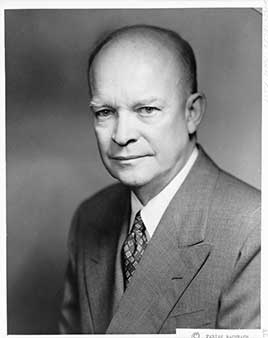

The Allied commander in Europe in World War II. He ended the Korean War with a 1953 armistice, built the Interstate Highway System, ran three budget surpluses, sent troops to enforce school desegregation in Little Rock and signed the first civil rights laws since Reconstruction. His farewell address warned of the 'military-industrial complex'.
Shaded areas show the years in office, with a few years before and after for comparison. Budget years ran July to June until 1976 (now October to September), so each year's figures cover parts of two calendar years.
June 30, 1952 (end of fiscal 1952): $259.11 billion → June 30, 1960 (end of fiscal 1960): $286.33 billion
Daily debt figures don't exist before 1993, so Eisenhower's numbers use the fiscal years closest to his terms. Before 1977 the budget year ran July to June.
Debt as a share of GDP. Above 100% means the debt is bigger than a year of everything the country produces.
Money borrowed each budget year (below the line) or paid down (above).
Jan 1953: 2.9% → Jan 1961: 6.6%. Monthly rates; the chart shows yearly averages.
How much prices rose each year (consumer price index).
What everyday prices and paychecks did while in office.
Prices use the consumer price index (MeasuringWorth). The minimum wage is the federal rate set by Congress.
482 orders, numbered 10432–10913. The American Presidency Project counts 484, including two lettered orders such as 10695-A.
Source: Wikipedia: list of Eisenhower's executive actions (full list of every order).
Expanded loyalty screening and made 'sexual perversion' grounds for firing, which barred gay people from federal jobs for two decades.
Federal RegisterSet up the three-level classification system for government secrets that is still used.
Federal RegisterRequired a nondiscrimination clause in federal contracts.
Federal RegisterSet rules for U.S. troops if captured, after the treatment of prisoners in Korea.
Federal RegisterSent the 101st Airborne and federalized the Arkansas National Guard to protect nine Black students integrating Central High School.
Federal RegisterSource: Executive Orders Archive, compiled from the American Presidency Project and the Federal Register. Topics are the archive's automated tags; "Revoked" and similar labels come from the Federal Register's records.
A pardon wipes out the punishment for a federal crime; a commutation shortens a sentence but leaves the conviction. Counts are by federal fiscal year (July to June before 1977). Fiscal 1953 covers January 20 to June 30, 1953; fiscal 1961 covers July 1960 to January 20, 1961.
Source: U.S. Dept. of Justice, clemency statistics, which lists every recipient with the crime and sentence.
The crime: Murder of an eight-year-old girl at a U.S. base in Japan (court-martial, 1954)
Sentence: Death
Why it drew attention: Eisenhower commuted the death sentence to life with no chance of parole, a condition the Supreme Court upheld in 1974.
SourceThe same checklist for every president. Tap a row for details and sources.
No articles of impeachment were voted on.
Never charged.
No one was convicted. His chief of staff, Sherman Adams, resigned in 1958 over gifts from a businessman, and Air Force Secretary Harold Talbott resigned in 1955 over conflicts of interest.
SourceNone were appointed.
The FBI started COINTELPRO in 1956 to disrupt the Communist Party; the Church Committee (1975–76) found it later spread to civil rights and other groups. It did not find that Eisenhower's White House directed it.
SourceWhat happened, what was proven, and how it ended.
After a U.S. spy plane was shot down over the Soviet Union, the administration said a weather plane had strayed off course. The Soviets then produced the wreckage and the captured pilot, Francis Gary Powers.
Outcome: Eisenhower admitted the spying; a planned summit in Paris collapsed.
SourceThe CIA helped overthrow Iran's elected prime minister, Mohammad Mosaddegh, and Guatemala's elected president, Jacobo Árbenz.
Outcome: The CIA formally acknowledged its role in Iran in 2013; the Guatemala operation is documented in released government records.
SourceUnder his 1953 security order, thousands of federal employees were investigated and fired for being gay.
Outcome: The civil service ban was lifted in 1975; the State Department apologized in 2017.
SourceA mass deportation campaign aimed at Mexican immigrants. The immigration service claimed more than a million removals; historians say the figure was inflated and that deportees were left in dangerous conditions.
Outcome: Ended in 1954–55; the numbers and methods remain debated.
SourceA House subcommittee found his chief of staff had accepted gifts from a businessman who sought his help with federal agencies.
Outcome: Adams resigned; he was never charged.
SourceWidely quoted remarks, with the context they were said in.
In the councils of government, we must guard against the acquisition of unwarranted influence, whether sought or unsought, by the military-industrial complex.
Every gun that is made, every warship launched, every rocket fired signifies, in the final sense, a theft from those who hunger and are not fed, those who are cold and are not clothed.
If you give me a week, I might think of one.